별책부록
부록에서는 strace 명령을 이용하여 다음 사항에 대해 실제 내부적으로 어떻게 처리되는지 알아보겠습니다.
주소공간의 분리
프로그램 사용 도중에 오류로 죽는 경우를 경험해 보셨을 겁니다. 보통 프로그램이 실행되면 여러 개의 스레드를 생성해서 사용하므로 프로그램이 죽는다는 것은 어느 한 스레드의 오류로 인해 주소 공간을 공유하고 있는 나머지 스레드들이 모두 함께 종료된다는 뜻입니다. 하지만 프로그램 A 가 죽는 다고 해서 다른 프로세스 아이디를 가지고 실행 중인 프로그램 B 가 함께 죽지는 않습니다. 이와 같이 프로그램 A 의 오류에 대해 프로그램 B 가 안전할 수 있는 이유는 주소 공간이 서로 분리되어 있기 때문입니다.
이와 같은 이유로 해서 OS 에서도 시스템의 주소 공간을 분리해 사용하는데 그것이 커널 모드와 유저 모드입니다. 이와 같은 기능은 CPU 내에서 하드웨어적으로 구현이 되어있는데 각 모드에서 사용할 수 있는 메모리 주소 공간, i/o port 그리고 실행할 수 있는 cpu instructions 이 다릅니다. 그러므로 커널 자체에서 문제가 발생하지 않는 이상 유저 모드에서 실행되는 사용자 프로그램의 오류로 인해 시스템 전체가 죽는 경우가 발생하지 않는 것입니다.
System call
커널 모드에서 실행되는 OS 는 시스템의 root 계정과 같아서 시스템 내의 모든 자원을 사용하는데 제한이 없습니다. 메모리와 디바이스 같은 시스템 리소스를 관리하고 프로세스를 생성하고 스케줄 하는 일들은 커널 모드에서 OS 에 의해 이루어집니다. 그럼 유저 모드에서 실행되는 프로그램이 메모리를 할당해 사용하거나 메시지를 프린트하기 위해 터미널 디바이스를 사용하려면 어떻게 해야 할까요? 사용자 프로그램에서는 OS 가 하는 일을 할 수 없습니다. 그러므로 그와 같은 작업은 OS 에 요청을 해서 이루어지게 되는데 이것이 system call 이라는 인터페이스입니다. system call 은 커널 내부에 정의되어있어서 사용자 프로그램에서 호출할 수 있는 일종의 함수로 system call 이 이루어지면 먼저 커널 모드로 스위칭이 된 후 함수가 실행되고 실행이 완료되면 다시 유저 모드로 복귀하게 됩니다. 일반 함수 호출에 비해 거치는 단계가 많아서 단점을 극복하기 위해 vsyscall, vDSO (virtual dynamic shared object), vvar 같은 방법들이 사용되고 있습니다.
ldd 명령을 사용했을 때 목록의 제일위에 나오는 것이 vDSO 입니다.
$ cat /proc/$PID/maps 을 통해서도 볼 수 있습니다.
이외에도 system call 인터페이스를 이용하게 되면 애플리케이션 프로그래머가 하드웨어와 관련된 저 수준의 프로그래밍을 직접 할 필요가 없는 장점도 있습니다.
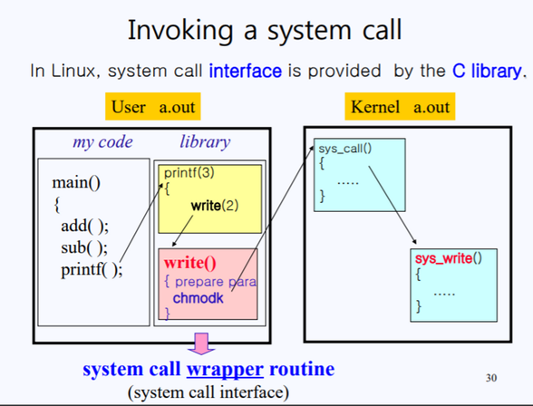
System call 을 다음과 같이 5 개의 카테고리로 분류해 볼 수 있습니다.
1. Process Control
|
2. File management
|
3. Device Management
|
4. Information Maintenance
|
5. Communication
| |
system call 함수들의 목록은
man syscalls명령으로 볼 수 있습니다.
system call 함수는 man 페이지 섹션 2 에 해당하므로man 2 함수명으로 조회할 수 있습니다.
unix 초기에는 system call 함수가 40 개 정도였는데 지금은 380 개 가 넘습니다.
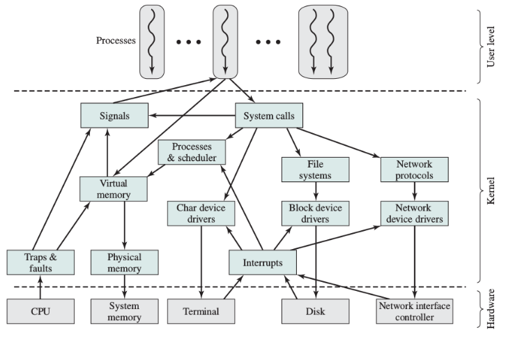
C Standard library
C standard library 는 내부적으로 system call 을 사용하지만 추가적으로 입, 출력 시에 중간에 버퍼를 두어서 최적화된 성능을 제공하거나 출력에 포멧 기능을 제공하는 것과 같은 유용한 기능을 제공합니다. 예를 들어 fgets, printf, fork 같은 라이브러리 함수는 내부적으로 read, write, clone 시스템콜을 사용하고 malloc, calloc, realloc 함수는 brk 시스템콜을 이용해 heap 메모리를 조절합니다.
C standard library 는 시스템콜 함수들을 동일한 이름으로 일종의 wrapper 함수를 제공합니다. 이 wrapper 함수는 일반 함수를 사용하는 것과 같이 손쉽게 시스템콜 함수를 호출할 수 있게 해줍니다. C 프로그래밍에서 시스템콜 함수를 사용하는 것은 보통 이 wrapper 함수를 말합니다. 리눅스의 futex 시스템콜 함수의 경우는 따로 wrapper 함수가 없는데 ( 또는 커널에 새로 시스템콜 함수가 추가될 경우 ) 이때는 다음과 같이 직접 syscall 함수를 이용해 호출합니다.
static int futex(int *uaddr, int futex_op, int val,
const struct timespec *timeout, int *uaddr2, int val3)
{
return syscall(SYS_futex, uaddr, futex_op, val, timeout, uaddr, val3);
}
int io_uring_setup(unsigned entries, struct io_uring_params *p)
{
return (int) syscall(__NR_io_uring_setup, entries, p);
}
C 프로그래밍을 할때 사용하는 함수들은 모두 C standard library 에서 제공되는 것입니다.
C standard library 함수는 man 페이지 섹션 3 에 해당하므로man 3 함수명으로 조회할 수 있습니다.
GNU C library 메뉴얼: https://www.gnu.org/software/libc/manual/html_node/index.html
Strace
strace 명령은 프로세스가 실행 중에 사용하는 system call 함수와 signal 을 trace 할 수 있는 명령입니다. 가령 두 개의 숫자를 인수로 받아서 산술연산을 한 후에 결과를 리턴하는 함수일 경우 특별히 system call 이 필요 없습니다. 하지만 파일을 open 하고, 메모리를 할당하고, 프로세스를 생성하는 것과 같이 커널이 하는 일은 system call 을 이용하므로 strace 명령을 이용하면 프로그램의 소스 코드가 없더라도 프로그램의 전반적인 진행과정을 파악해볼 수 있습니다.
strace 를 이용해 실제 trace 를 진행하기 전에 출력되는 메시지에 대해 알아보겠습니다.
다음은 기본적인 출력 형식인데 처음에 system call 함수명이 나오고 ( ) 안에 인수들이 표시됩니다.
마지막으로 = 에서 함수의 리턴 값이 표시됩니다.
# 함수명( 인수들 ... ) = 리턴값
open("/dev/null", O_RDONLY) = 3
# 인수들은 보기 좋게 해석되어 표시됩니다.
open("xyzzy", O_WRONLY|O_APPEND|O_CREAT, 0666) = 3
C 함수에서는 구조체를 인수로 전달할 때 passing by value 를 할 수 있지만 system call 에서는 포인터만 사용합니다. strace 에서 표시되는 포인터 인수 값들은 함수의 실행 결과로 설정된 ouput 값이 표시되거나 또는 함수에 전달되는 input 값이 그대로 표시될 수 있습니다.
# 첫 번째 인수는 input 값이 되고, 두 번째 인수는 함수 실행 결과인 output 값이 됩니다.
lstat("/dev/null", {st_mode=S_IFCHR|0666, st_rdev=makedev(1, 3), ...}) = 0
# 이번 경우는 함수 실행이 실패하여 두 번째 인수 값이 그대로 input 값이 표시됩니다.
# 만약에 성공하였다면 0xb004 값이 dereferenced 되어서 위와 같이 구조체 값이 표시되겠죠.
lstat("/foo/bar", 0xb004) = -1 ENOENT (No such file or directory)
# 두 번째 인수 값은 함수 실행 결과인 output 값입니다.
wait4(-1, [{WIFSIGNALED(s) && WTERMSIG(s) == SIGINT}], 0, NULL) = 14921
함수의 리턴 값은 정수나 주소값이 표시되는데 보통 0 은 성공을 -1 은 오류를 나타냅니다. 이것은 절대적인 것은 아니고 getpriority 같은 함수일 경우에는 -1 이 정상적인 리턴 값이 될 수 있습니다. 오류일 경우 함수는 thread local 변수인 errno 에 non-zero 값을 설정하는데 이 값으로 어떤 오류가 발생했는지 알 수 있습니다. ( getpriority 함수의 경우 호출전에 먼저 errno 변수를 0 으로 설정한 후 함수 리턴시 errno 값을 체크하여 오류 여부를 판단합니다. )
# 여기서 리턴값 -1 은 오류를 나타내고 이어지는 ENOENT 심볼은 errno 변수에 설정된 값을 나타냅니다.
# 이어서 ENOENT 에 대한 설명이 ( ) 에 표시되는 것을 볼 수 있습니다..
lstat("/foo/bar", 0xb004) = -1 ENOENT (No such file or directory)
system call 이나 C standard library 함수에서 설정하는 errno 값들에 대한 심볼과 설명은
man errno로 볼 수 있습니다.
인수들의 값을 표시할 때 구조체일 경우는 { } 로 표시하고 단순 포인터나 array 일 경우는 [ ] 로 표시합니다.
bit-set 값도 [ ] 로 표시하는데 차이점은 array 의 경우는 원소들을 , 로 분리하고 bit-set 값들은 공백으로 분리합니다.
bit-set 값을 표시할 때 설정되지 않은 값들을 표시하는 것이 효율적일 경우 ~[ ] 형태로 표시합니다.
스트링의 경우는 기본적으로 32 자 까지만 표시하는데 그 이상의 값을 가질 경우 뒤에 ... 를 붙입니다.
# { } 로 표시되는 두 번째 인수는 구조체 값을 나타냄
lstat("/dev/null", {st_mode=S_IFCHR|0666, st_rdev=makedev(1, 3), ...}) = 0
# [ ] 로 표시되는 인수는 array 값으로 ',' 에 의해 분리
getgroups(32, [100, 0]) = 2
# [ ] 로 표시되는 인수는 bit-set 값으로 공백으로 분리
sigprocmask(SIG_BLOCK, [CHLD TTOU], []) = 0
# [AAA BBB] 는 AAA BBB 값을 나타내지만 ~[AAA BBB] 와 같이 앞에 ~ 를 붙이면
# bitwise NOT 이되어 AAA BBB 를 제외하고 모두 다 가 됩니다.
# 따라서 다음 같은 경우는 신호 전체 값을 나타내는 것과 같습니다.
sigprocmask(SIG_UNBLOCK, ~[], NULL) = 0
# 스트링은 기본적으로 32 자 까지만 표시하고 ... 를 붙입니다.
read(3, "#!/bin/bash\n\necho \"A.sh.....star"..., 80) = 66
프로세스에 전달되는 signal 은 다음과 같은 형태로 표시됩니다.
# SIGINT 신호가 사용자에 의해 전달되어 프로세스가 killed 되었을 경우 다음과 같이 표시됩니다.
--- SIGINT {si_signo=SIGINT, si_code=SI_USER, si_pid=14920, si_uid=1000} ---
+++ killed by SIGINT +++
-f 옵션을 이용해 child process 까지 trace 하다 보면
함수 실행이 끝나지 않은 상태에서 다른 프로세스에 의해 함수가 실행될 수 있는데 이럴 경우 strace 는 순서를 유지하기 위해
<unfinished ...>, <... 함수명 resumed> 을 이용해 표시합니다.
# pid 28772 에서 select 함수가 실행 중에 있을 때
# pid 28779 에서 clock_gettime 함수가 호출된 경우입니다.
[pid 28772] select(4, [3], NULL, NULL, NULL <unfinished ...>
[pid 28779] clock_gettime(CLOCK_REALTIME, {1130322148, 939977000}) = 0
[pid 28772] <... select resumed> ) = 1 (in [3])
Subshell
strace 를 이용하여 subshell 이 실제 내부적으로 어떻게 처리되는지 알아보겠습니다. strace 는 직접 명령을 인수로 받아서 child process 로 실행하여 trace 할 수도 있고 현재 실행 중인 프로세스에 attach 하여 실행할 수도 있습니다. 한가지 참고해야 될 사항은 strace 는 기본적으로 child process 형식으로만 trace 가 가능하고 pid 에 attach 하여 실행하는 방식은 같은 사용자의 프로세스라도 root 권한이 필요하다는 점입니다. 이유는 악의적인 프로그램에 의해 손쉽게 trace 되는 것을 방지하기 위해서이므로 만약에 attach 할때 "Operation not permitted" 메시지가 나타난다면 먼저 다음과 같은 설정을 통해 root 로 실행하는 것을 방지할 수 있습니다.
$ sudo sysctl -w kernel.yama.ptrace_scope=0
# 또는
$ sudo sh -c 'echo 0 > /proc/sys/kernel/yama/ptrace_scope'
------------------------------------------------------------
# reboot 후에도 적용되게 하려면 /etc/sysctl.conf 파일에 다음 라인을 추가합니다.
kernel.yama.ptrace_scope = 0
bash 의 경우 system call 이 많이 발생해 복잡하므로 sh 을 이용해 trace 하겠습니다.
strace 는 -e 옵션을 통해 특정 system call 함수만 지정할 수가 있습니다.
또한 %file, %process, %network, %signal, %ipc, %memory 같은 그룹을 사용할 수도 있습니다.
특정 함수를 제외하고 모두를 선택할 경우는 앞에
!를 붙이면 됩니다. (-e '!clone,execve')
2 개의 터미널을 준비한 후 첫 번째 터미널에서 /bin/sh 명령을 실행해 sh 프롬프트로 들어갑니다.
1 . terminal 1 에서 sh 을 실행한 후 pid 를 확인합니다.
sh$ echo $$
1234
2 . terminal 2 에서 다음 명령을 실행합니다.
# '-o' 옵션은 출력이 subshell.strace 파일로 저장되게 합니다.
# '-e' 옵션은 clone,execve 함수만 trace 합니다.
# '-f' 옵션은 child process 도 trace 되게 합니다.
# '-p' 옵션은 pid 에 attach 합니다.
$ strace -o subshell.strace -e clone,execve -f -p 1234
3 . terminal 1 의 sh 프롬프트 상에서 다음 명령을 차례로 입력합니다.
sh$ date; date; date
sh$ ( date; date; date )
4 . terminal 2 에서 strace 명령을 ctrl-c 로 종료합니다.
ls 해보면 디렉토리에 다음과 같은 내용의 subshell.strace 파일이 생성된 것을 볼 수 있습니다.
vi 로 열었을때 highlight 가 되지 않으면 :set ft=strace 명령을 입력합니다.
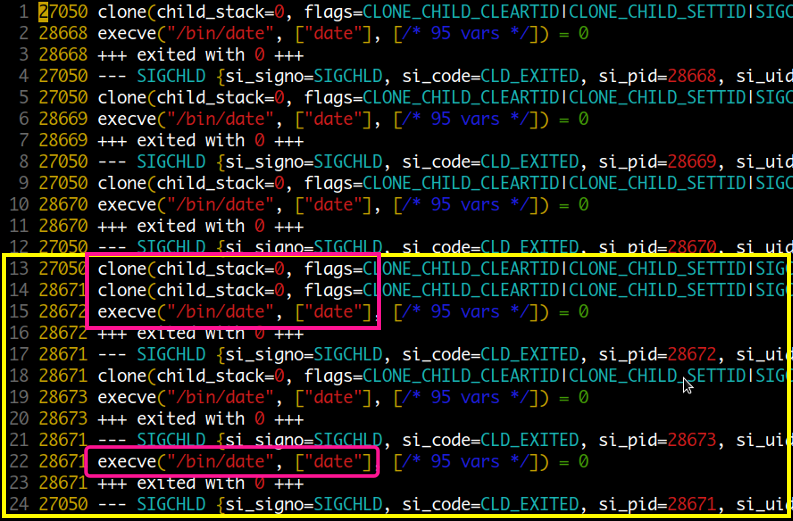
Process creation 메뉴에서 명령이 실행될때 fork-exec 과정을 거친다고 설명하였는데 실제 리눅스에서는 fork 이 내부적으로 clone 시스템 콜에 의해 처리가 됩니다. 위에서부터 차례대로 fork, exec 과정을 거치며 처음 입력한 3 개의 date 명령이 실행되고 종료되는것을 볼 수 있습니다.
노란색 박스 부분이 subshell 로 ( date; date; date ) 명령을 실행한 부분인데
빨간색 박스로 표시된 부분을 보면 clone 함수가 연이어 두 번 실행되는 것을 볼 수 있습니다.
여기서 첫 번째 clone 이 subshell 에 해당하는 부분입니다.
그리고 마지막 명령은 clone 없이 바로 exec 하는 것을 볼 수 있는데 이것은 subshell optimization 으로
subshell clone 이 남아있기 때문입니다.
subshell 은 스크립트 내에서 자주 사용되므로 optimization 이 필요하지만 스크립트 파일 같은 경우는 특별히 필요가 없습니다. 하지만 exec 명령을 사용하면 subshell 과 같은 효과를 얻을 수 있습니다.
$ cat test.sh
#!/bin/sh
date
date
exec /bin/date # 새로 프로세스를 생성하지 않고 현재 스크립트 프로세스를 이용해 실행
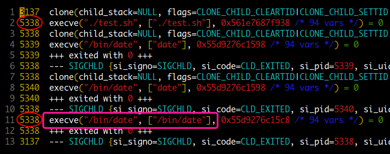
Child Process
child process 가 생성될 때 subshell 의 경우는 fork 과정만 거치지만 명령 실행의 경우는 fork-exec 과정을 거칩니다. 이때 parent process 는 wait 함수를 실행하여 child process 가 종료될 때까지 기다리는데요. 아래 그림에서 녹색 박스 부분이 parent process 에 해당됩니다. child process 가 실행을 마치고 종료하게 되면 parent 의 wait 함수가 resume 되면서 child process 의 PCB 에 설정되어 있는 종료 상태 값을 가져오게 됩니다. 만약에 이 과정이 처리되지 않으면 child process 는 좀비 상태로 계속 프로세스 테이블에 남아있게 됩니다.
child process 의 상태가 변경되어 parent process 에 SIGCHLD 신호가 전달되는 것도 볼 수 있는데 parent 에서 SIGCHLD trap handler 를 설정하였다면 실행될 것입니다.
# terminal 2
$ strace -o child.strace -e %process,write -f -p 1234
-----------------------------------------------------
# terminal 1
sh$ date; date -@ # -@ 는 오류를 위한 옵션
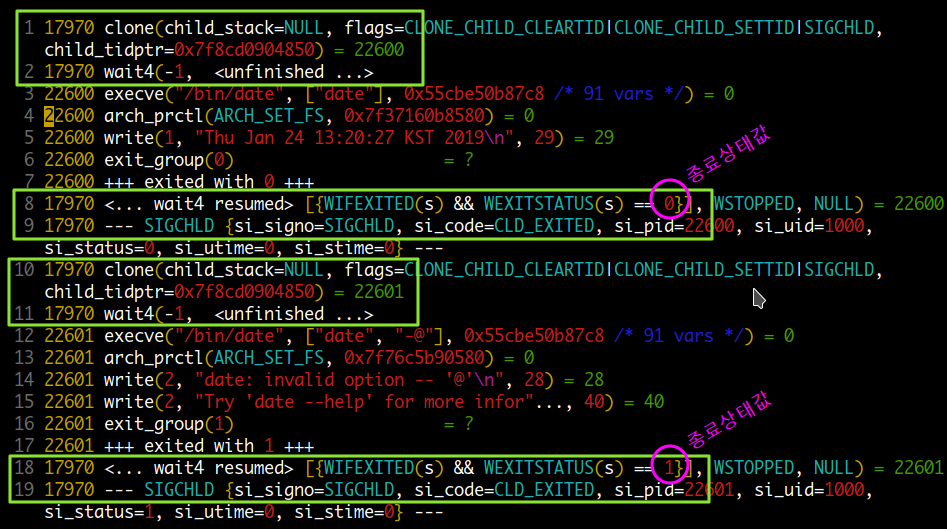
Background Process
& 문자를 이용해 background 로 child process 를 실행하면 parent 는
child process 가 종료될 때까지 기다리지 않고 바로 다음 작업을 진행할 수 있습니다.
먼저 wait 함수에 대해 알아볼 필요가 있는데요
waitpid ( pid, wstatus, options );
pid 는 기다릴 child pid 를 말하는데 이 값이 -1 이면 any child process 가 됩니다.
wstatus 에는 함수 실행 결과로 child process 의 종료 상태 값이 여기에 저장됩니다.
# terminal 2
$ strace -o background.strace -e %process,write -f -p 1234
---------------------------------------------------------
# terminal 1
sh$ date &
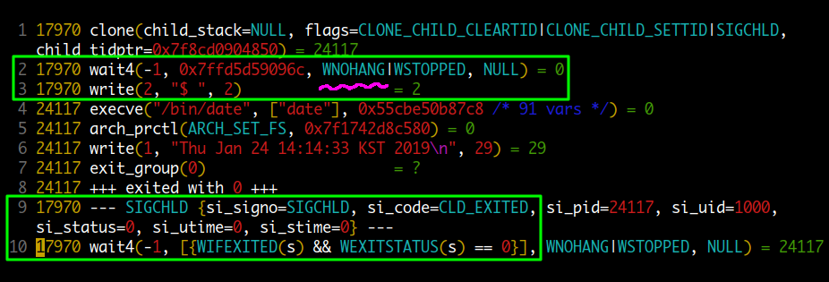
먼저 비교를 위해서 앞서 설명했던 child process 의 경우를 다시 살펴보면
- 2번 라인:
wait4(-1, <unfinished ...>에서 parent process 가 block 됐다가 - child process 가 종료된 후에
- 8번 라인:
<... wait4 resumed>에서 실행이 재개되면서 - 9번 라인: 에서
SIGCHLD신호가 전달되는데요
Background process 의 경우를 보면
- 2번 라인: 에서 wait 함수 실행이 완료되고
- 3번 라인: 에서 이어서 write 함수가 실행되는 것을 볼 수 있습니다. 이것은 다시 말해서 prarent process 가 wait 함수에 의해 block 되지 않는다는 의미인데요
wait 함수 실행시 추가된 WNOHANG 옵션은 종료된 child process 가 없을 경우
바로 return 되게 합니다.
이후 child process 가 종료되어 SIGCHLD 신호가 prarent process 에 전달되고
마지막으로 종료 상태 값을 가져오기 위해 wait 함수가 다시 실행되는 것을 볼 수 있습니다.
background 로 프로세스를 실행할 때 { } 와 ( ) 비교
기본적으로 && || | 앞에서는 & 연산자를 이용해 background 로 실행할 수 없는데요.
하지만 괄호를 사용하면 가능합니다.
다음은 { } 키워드와 ( ) 메타 문자를 비교해 본 것인데
{ } 키워드의 경우 괄호 안에서 실행되는 명령이 job table 에 등록이 되는 반면
( ) 의 경우는 등록되지 않습니다.
또한 background 명령의 종료 상태 값에 상관없이 echo 222 명령이 실행되는 것을 볼 수 있습니다.
$ { echo 111 & } && echo 222 # { } 키워드
[1] 3160528
222
111
[1]+ Done echo 111
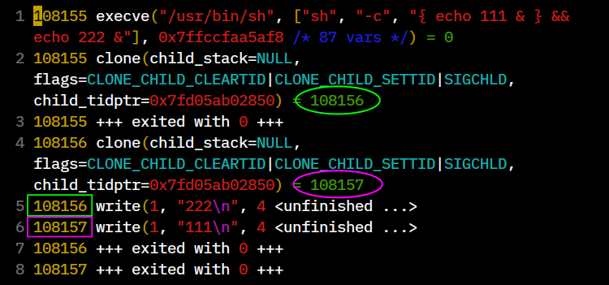
$ ( echo 111 & ) && echo 222 # ( ) 메타문자
111 # subshell 이 하나 더 생성된다.
222
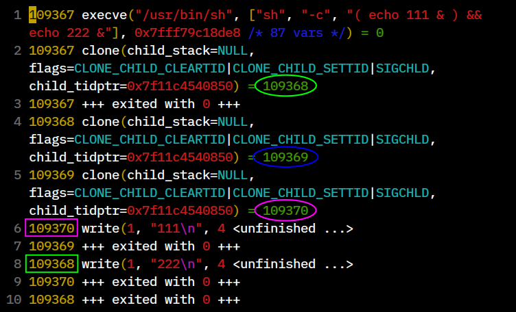
명령에 선행하는 대입 연산
$ AAA=100 BBB=200 CCC=300 date
명령에 선행하는 대입연산 변수값이 실제 어떻게 전달되는지 살펴보겠습니다.
strace 에서 출력되는 인수 값은 스트링의 경우 32 자가 넘어가면 ... 로 표시되고
exec 함수가 실행될때 전달되는 환경 변수값들은 /* 95 vars */ 형태로 표시가 됩니다.
스트링의 경우 -s 옵션으로 크기를 조절할수 있고 환경 변수값은 -v 옵션을 통해 볼 수 있습니다.
# terminal 2
$ strace -o assign.strace -e %process -v -f -p 1234
----------------------------------------------------------
# terminal 1
sh$ AAA=100 BBB=200 CCC=300 date
생성된 assign.strace 파일을 열어 보면 다음과 같이 exec 함수가 실행될때 export 한 변수들과 함께 AAA=100, BBB=2000, CCC=3000 이 전달되는 것을 볼 수가 있습니다.
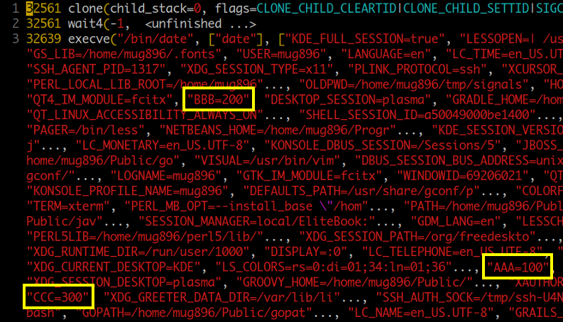
Pipe
모듈화라는 유닉스 철학을 가능하게 한 파이프 기능은 원래 Unix OS 를 만들 당시에는 넣을 생각이 없었다고 합니다. 그런데 당시 Bell Labs 연구소 리더였던 Doug McIlroy 가 이 기능은 꼭 넣어야 된다고 자꾸 주장해서 넣게 되었다고 합니다. Ken Thompson 이 pipe 시스템 콜 함수를 만들고 파이프를 이용할 수 있게 모든 명령들을 수정했다고 합니다. 파이프가 동작되는 것을 본 후에는 이전으로 돌아가겠다는 사람이 없었다고 합니다.
# 최근 리눅스에서 pipe --> pipe2 로 변경되었음.
$ strace -qf -e execve,pipe,dup2,read,write \
sh -c 'echo hello | wc -c'
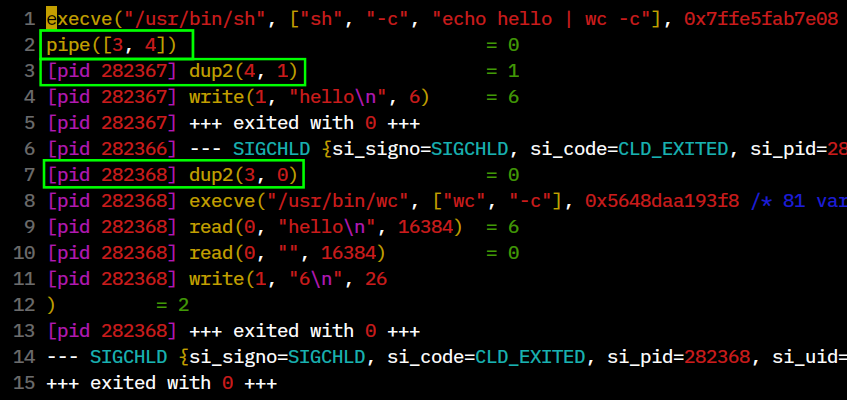
2번 라인: parent 프로세스에 해당하는
sh -c에서 pipe 시스템 콜을 이용해 파이프를 생성합니다. array 값 중에 첫 번째 3 번이 read 에 사용되는 FD 가 되고 두 번째 4 번이 write 에 사용되는 FD 가 됩니다.3번: pid 282367 은
echo hello명령에 해당하는 child 프로세스인데 dup2 시스템 콜을 이용해 FD 4 번을 FD 1 번으로 copy 합니다. 이때 기존에 open 되었던 FD 1 번은 자동으로 close 되고 대신에 FD 4 번이 FD 1 번으로 사용됩니다.4번: 이때부터는 FD 1 번 STDOUT 으로 출력하면 파이프로 write 이 되게 됩니다.
7번: pid 282368 은
wc -c명령에 해당하는 child 프로세스인데 dup2 시스템 콜을 이용해 FD 3 번을 FD 0 번으로 copy 합니다. 이때 기존에 open 되었던 FD 0 번은 자동으로 close 되고 대신에 FD 3 번이 FD 0 번으로 사용됩니다.9번: 이때부터는 FD 0 번 STDIN 을 read 하면 파이프로부터 read 가 되게 됩니다.
/*
* 다음은 "cat /proc/self/maps | grep libc" 명령과 같은 역할을 합니다.
* child 프로세스가 maps 파일을 읽어서 파이프로 출력을 하면 parent 프로세스가
* 파이프를 통해 라인을 받아서 "libc" 스트링이 존재할 경우 출력을 합니다.
**/
#include <unistd.h>
#include <stdio.h>
#include <stdlib.h>
#include <string.h>
#include <sys/wait.h>
int main(int argc, char *argv[])
{
int fd[2]; pipe(fd); // 파이프 생성
char *line = NULL;
size_t len = 0;
if (fork() > 0) goto parent;
dup2(fd[1], STDOUT_FILENO); // child 프로세스
close(fd[0]); close(fd[1]);
FILE *fp = fopen("/proc/self/maps", "r");
while (getline(&line, &len, fp) != -1)
fputs(line, stdout); // 이제 stdout 으로 출력하면 파이프로 쓰기가 된다.
fflush(stdout);
_exit(EXIT_SUCCESS);
parent:
dup2(fd[0], STDIN_FILENO);
close(fd[0]); close(fd[1]);
while (getline(&line, &len, stdin) != -1) // stdin 을 읽으면 파이프로 부터
{ // 읽기가 된다.
if (argc > 1) {
if (strstr(line, argv[1]) != NULL)
fputs(line, stdout);
} else
fputs(line, stdout);
} // while 문 대신에 system("wc"); 를 해도 된다.
wait(NULL);
return 0;
}
---------------------------------------
$ gcc pipe.c
$ ./a.out libc
7fb00b520000-7fb00b546000 r--p 00000000 . . . /usr/lib/x86_64-linux-gnu/libc-2.32.so
7fb00b546000-7fb00b6b3000 r-xp 00026000 . . . /usr/lib/x86_64-linux-gnu/libc-2.32.so
7fb00b6b3000-7fb00b6ff000 r--p 00193000 . . . /usr/lib/x86_64-linux-gnu/libc-2.32.so
. . .
shell 에서는 pipe 함수를 이용해 직접 파이프를 생성할 수 없기 때문에 named pipe 방식을 이용하는데 pipe 는 기본적으로 읽기와 쓰기 시 상대방이 없을 경우 블록 됩니다.
bash 와 sh 에서의 INT signal handler 가 처리되는 방식의 차이점
Signals and Traps 메뉴에 보면 a.sh -> b.sh -> c.sh 순서로 스크립트가
실행됐을때 Ctrl-c 에 의해 INT handler 가 실행되는 순서를 bash 와 sh 를 비교하여 설명해 놓은 부분이 있습니다.
다시한번 상기해보면 아무런 trap 설정도 안한 상태에서는 bash 와 sh 의 default handler 가 처리되는 방식이 차이가 없지만
child process 에서 사용자 trap handler 가 실행될 경우 이후 parent 의 default handler 실행에 차이점이 있다는 것인데요.
이와 같이 차이점이 생기는 원인을 strace 를 통해 알아보겠습니다.
trace 에 사용되는 스크립트는 다음과 같습니다.
shebang 라인을 #!/bin/sh 과 #!/bin/bash 로 바꾸어가며 trace 를 해보고
B.sh 에서 사용자 trap 설정을 on , off 해가면서 각각 trace 해보겠습니다.
signal 에 대한 overview 는
man 7 signal을 참조하세요
----------- A.sh -----------
#!/bin/sh
#!/bin/bash
echo "A.sh.....start"
./B.sh
echo "A.sh.....end"
----------- B.sh -----------
#!/bin/sh
#!/bin/bash
#trap "echo TRAP --- B.sh" INT
echo "B.sh........start"
cat
echo "B.sh........end"
/bin/sh, trap OFF
/bin/sh shebang 라인에 B.sh 스크립트 에서 trap 설정을 OFF 한 상태입니다.
스크립트를 실행해 보면 다음과 같은 결과가 나옵니다.
$ ./A.sh
A.sh.....start
B.sh........start
^C # cat 명령의 입력 대기 상태에서 Ctrl-c 에 의한 종료
# A.sh, B.sh 모두 default INT handler 에 의해 종료됨
이번에는 strace 명령으로 실제 내부적으로 어떤 일이 일어나는지 trace 해보겠습니다.
# '-e' 옵션 값으로 process, signal 그룹과 메시지를 보기 위해 write 함수를 설정하였습니다.
# '-I3' 옵션은 trace 중에 ctrl-c 를 누를 경우 strace 명령 자체가 종료되지 않게 fatal siganl 을
# block 합니다. '-o' 옵션을 사용할 경우 디폴트로 설정되지만 설명을 위해 추가하였습니다.
$ strace -o sh.strace -e %process,%signal,write -f -I3 ./A.sh
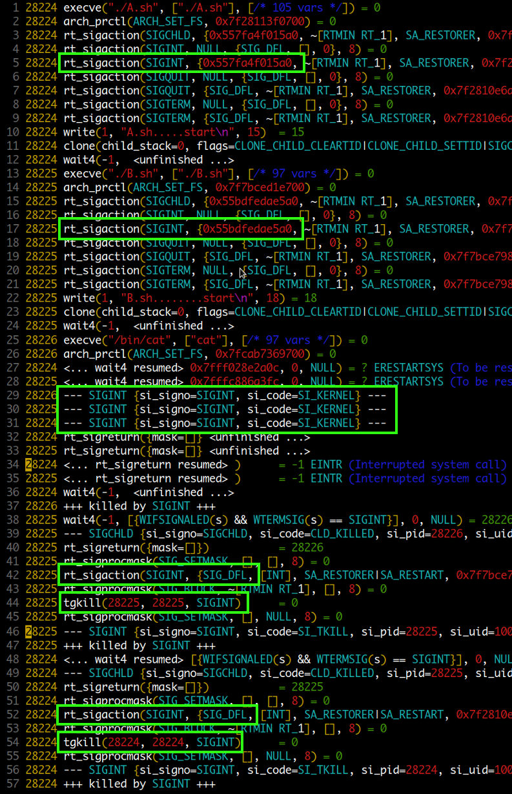
왼쪽에 노란색으로 표시되는 번호가 pid 입니다. 28224, 28225, 28226 세 개의 번호가 보이는 걸로 봐서 28224 는 A.sh, 28225 는 B.sh, 28226 번은 cat 명령의 pid 입니다.
1번 라인: 제일 처음 라인에 A.sh 의 exec 함수가 실행되는 것을 볼 수 있습니다.
5번: rt_sigaction 함수는 shell 에서 trap 설정하는 것과 같이 signal handler 를 설정하는 역할을 합니다. 녹색 박스에 보면 SIGINT handler 를 설정하고 있는 것을 볼 수 있습니다. 두 번째 인수 값은 SIG_DFL ( default handler ), SIG_IGN ( 신호 ignore ) 와 같은 값이 올 수 있는데 주소값이 표시되는 걸로 봐서 사용자 handler 가 설정되고 있습니다. 다시 말해서 INT 신호를 받게 되면 default handler 에 의해 바로 종료되지 않을 것입니다.
10 ~ 12번: write 함수로 A.sh 에서의 start 메시지를 표시하고 B.sh child process 생성을 위한 clone 함수를 실행하고 있습니다. 바로이어서 wait 함수가 실행되는 것을 볼 수 있습니다.
13번: 이제 pid 가 바뀌어서 다음에 보이는 exec 함수는 B.sh 프로세스에서 실행됩니다. A.sh 에서와 마찬가지로 녹색 박스에서 SIGINT handler 를 설정하는 것을 볼 수 있습니다.
동일한 과정을 거쳐서 cat 명령의 프로세스도 생성이 되지만 한가지 차이점이 있습니다. cat 명령의 경우 exec 후에 별도로 SIGINT handler 를 설정하지 않고 있습니다. 그러므로 INT 신호가 전달된다면 바로 default handler 에 의해 종료될 것입니다.
29, 30, 31 라인을 보면 세 프로세스에게 모두 SIGINT 신호가 KERNEL 로부터 전달되는 것을 볼 수 있습니다. cat 명령의 입력 대기 상태에서 사용자가 Ctrl-c 키를 누른 것을 알 수 있습니다.
37번: cat 명령은 바로 INT 신호에 의해 killed 되는 것을 볼 수 있습니다.
38번: cat 프로세스가 종료된 후 parent 프로세스에 해당하는 B.sh 의 wait 함수값이 설정되었습니다. exit 에 의해 정상 종료된 것이 아니라 signal 에 의해 종료되었고 이때 신호는 SIGINT 라는 것을 알 수 있습니다.
42번 라인을 보면 B.sh 은 다시 rt_sigaction 함수를 이용해 SIGINT handler 를 default handler ( SIG_DFL ) 로 설정하는 것을 볼 수 있습니다. 그리고 바로 자기 자신에게 INT 신호를 보내 killed 되는 것을 볼 수 있습니다.
A.sh 도 마찬가지로 B.sh 과 같은 형식으로 종료되는 것을 볼 수 있습니다.
/bin/sh, trap ON
/bin/sh shebang 라인에 B.sh 스크립트에서 trap 설정을 ON 한 상태입니다.
./A.sh
A.sh.....start
B.sh........start
^CTRAP --- B.sh # Ctrl-c 입력에 의해 사용자 trap handler 가 실행되고
B.sh........end # B.sh 의 나머지 부분도 실행되나
# A.sh 의 경우는 default handler 에 의해 종료
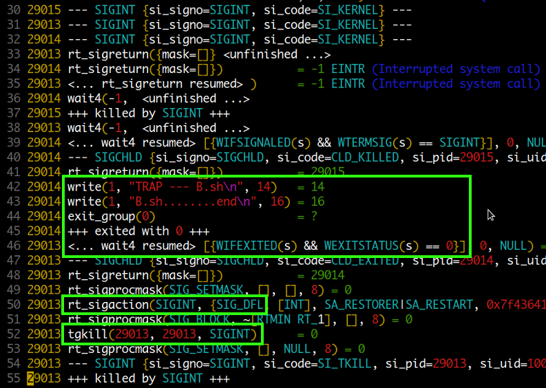
이번에는 pid 번호가 A.sh, B.sh, cat 각각 29013, 29014, 29015 에 해당합니다. 전반 부분은 이전과 동일하게 진행되므로 생략하였고 세 프로세스에 SIGINT 신호가 전달되는 부분부터 살펴보겠습니다.
37번 라인: cat 명령이 default INT handler 에 의해 killed 됩니다.
39번: cat 명령의 parent 프로세스에 해당하는 B.sh 의 wait 함수값이 설정되었습니다.
child 프로세스가 signal 에 의해 종료되었고 이때 신호값은 SIGINT 입니다.42번 라인부터 시작하는 녹색 박스를 보면 B.sh 스크립트에 설정된 사용자 trap handler 가 실행되어 메시지가 표시되는 것을 볼 수 있습니다. 그리고 이어 B.sh 의 나머지 부분이 실행되고 exit 됩니다.
46번: B.sh 의 parent 프로세스에 해당하는 A.sh 의 wait 함수값이 설정되었습니다. 이번에는 child 프로세스가 signal 에 의해 종료된 것이 아니라 exit 에 의해 정상 종료되었고 이때 종료상태 값은 0 이라는 것을 알 수 있습니다.
50번: A.sh 은 rt_sigaction 함수를 이용해 SIGINT handler 를 default handler ( SIG_DFL ) 로 설정하고 자기 자신에 INT 신호를 보내 killed 됩니다.
/bin/bash, trap OFF
/bin/bash shebang 라인에 B.sh 스크립트 에서 trap 설정을 OFF 한 상태 입니다.
$ ./A.sh
A.sh.....start
B.sh........start
^C # ctrl-c 에 의한 종료
# A.sh, B.sh 모두 default handler 에 의해 종료 (sh 과 동일)
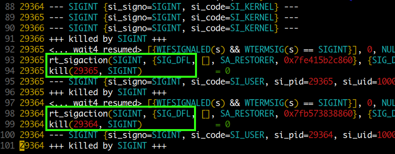
- 이번에는 shebang 라인이 바뀌어
bash스크립트입니다. bash 의 경우 sh 에 비해 system call 이 많이 발생해서 좀 보기 좋게 정리를 하였습니다. 어쨌든 결과를 보면 B.sh 에서 사용자 trap 설정을 OFF 한 상태에서는sh에서와 차이가 없이 동일하게 default handler 에 의해 종료되는 것을 볼 수 있습니다.
/bin/bash, trap ON
/bin/bash shebang 라인에 B.sh 스크립트 에서 trap 설정을 ON 한 상태 입니다.
A.sh.....start
B.sh........start
^CTRAP --- B.sh # Ctrl-c 입력에 의해 사용자 trap handler 가 실행되고
B.sh........end # B.sh 의 나머지 부분도 실행되고
A.sh.....end # sh 과 달리 A.sh 의 나머지 부분도 실행됩니다.

103번: cat 명령이 SIGINT 신호를 받고 default INT handler 에 의해 killed 되었습니다.
104번: parent 프로세스에 해당하는 B.sh 의 wait 함수값이 설정되었습니다.
child 프로세스가 signal 에 의해 종료되었고 이때 신호는 SIGINT 라는 것을 알 수 있습니다.105번: B.sh 의 사용자 trap handler 가 실행되어 메시지가 표시됩니다.
108~110번: B.sh 의 나머지 부분도 실행이 되고 exit 되는 것을 볼 수 있습니다.
111번: B.sh 의 parent 프로세스에 해당하는 A.sh 의 wait 함수값이 설정되었습니다.
child 프로세스가 exit 에 의해 정상 종료하였고 이때 종료 상태 값은 0 인 것을 알 수 있습니다.112번 줄을 보면 A.sh 은 rt_sigaction 함수를 이용해 SIGINT handler 를 default handler ( SIG_DFL ) 로 설정하지만 이후에 sh 에서와 같이 자기 자신에게 INT 신호를 보내 종료하지 않고 A.sh 의 나머지 명령을 실행하고 exit 하는 것을 볼 수 있습니다.
그러니까 bash 와 sh 모두 사용자가 signal handler 를 등록하지 않았을 경우
자신의 signal handler 를 등록해 처리하는데 bash 의 경우는 child 프로세스가
정상 종료하였는지 아니면 signal 에 의해 비정상 종료하였는지를 체크하여 그에따라
나머지 명령들을 실행하거나, 아니면 default handler 로 설정 후 자신에게 INT 신호를
보내 종료하지만, sh 의 경우는 구분없이 모두 default handler 로 설정해 종료한다고 보면 되겠습니다.
strace 명령의
-o와-f옵션을 이용해 trace 파일을 생성할 때 프로세스 아이디 별로 뽑고 싶으면-f옵션 대신에-ff를 사용하면 됩니다.
Zombie 프로세스와 wait 시스템콜 함수
다음 영상을 통해서 shell 에서 직접 좀비 프로세스를 생성하고 wait 시스템콜 함수에 의해 프로세스 테이블에서 정리되는 과정을 알아볼 수 있습니다.
File lock
Mutual Exclusion 메뉴에서 소개된 flock 명령은 flock 시스템 콜을 사용합니다.
tmp.txt 파일에 초기값으로 0 을 입력한 다음 3 개의 background 프로세스를 생성해서
동시에 read ---> 읽은 값에 +1 ---> write 을 각각 100,000 회씩 반복해보면
읽고, 쓰기 작업이 겹쳐서 결과가 300,000 이 되지 않습니다.
이때 flock 을 이용해 lock 을 걸면 하나의 프로세스만 tmp.txt 파일을 사용할 수 있게 됩니다.
$ echo 0 > tmp.txt && gcc -xc - <<\@ && \
{ ./a.out & ./a.out & ./a.out & } | cat; cat tmp.txt
#include <stdio.h>
#include <stdlib.h>
int main() {
char buf[10];
FILE *fp = fopen("tmp.txt", "r+");
for (int i = 1; i <= 100000; i++) {
rewind(fp);
fgets(buf, sizeof(buf), fp);
int num = atoi(buf) + 1;
rewind(fp);
fprintf(fp, "%d\n", num);
}
}
@
151132 // 읽고 쓰기가 겹쳐서 300,000 이 되지 않는다.
---------------------------------------------------
$ echo 0 > tmp.txt && gcc -xc - <<\@ && \
{ ./a.out & ./a.out & ./a.out & } | cat; cat tmp.txt
#include <stdio.h>
#include <stdlib.h>
#include <sys/file.h>
int main() {
char buf[10];
FILE *fp = fopen("tmp.txt", "r+");
flock (fileno(fp), LOCK_EX); // tmp.txt 파일의 fd 를 이용해 flock
for (int i = 1; i <= 100000; i++) {
rewind(fp);
fgets(buf, sizeof(buf), fp);
int num = atoi(buf) + 1;
rewind(fp);
fprintf(fp, "%d\n", num);
}
flock(fileno(fp), LOCK_UN); // flock 해제
}
@
300000
Thread
다음은 pthread 를 이용해 2 개의 스레드를 생성하는 경우인데요. 프로세스를 생성할 때와 동일하게 clone 함수를 이용하고 있습니다. 스레드는 프로세스 주소공간 내에서 각자 실행을 위한 stack 을 가지므로 child_stack 값이 설정되어 있습니다. flags 에 보이는 CLONE_VM 은 프로세스와 주소공간을 공유한다는 의미이고 CLONE_FS 은 파일시스템을 공유, CLONE_FILES 오픈 파일들을 공유, CLONE_SIGHAND 는 signal handlers, blocked signals 을 공유한다는 의미입니다. 오른쪽으로 가서 tls ( thread local storage ) 주소도 볼 수 있습니다. 스레드는 프로세스와 주소공간을 공유하므로 clone 후에 exec 을 하지 않는걸 알 수 있습니다.

#define _GNU_SOURCE
#include <stdio.h>
#include <stdlib.h>
#include <pthread.h>
#include <unistd.h>
#include <stdint.h>
void *runfunc(void *arg)
{
int no = (uintptr_t)arg;
printf("NO %d, SELF : %lu, TID : %d, PID : %d\n"
,no , pthread_self(), gettid(), getpid());
// return 에서 사용된 값은 스레드의 종료 상태 값으로 사용됩니다.
return NULL;
}
int main(int argc, char *argv[])
{
int num = argc > 1 ? atoi(argv[1]) : 1;
pthread_t thread[num];
for (int i = 1; i <= num; i++)
pthread_create(&thread[i], NULL, runfunc, (void *)(uintptr_t) i);
// main 스레드가 pthread_exit() 을 하면 모든 child 스레드가 종료된 후에 종료됩니다.
pthread_exit(NULL);
}
-------------------------------------------------
$ gcc thread.c -pthread
$ ./a.out 10 # 스레드 10 개를 생성
NO 1, SELF : 140010508047936, TID : 1589737, PID : 1589736
NO 4, SELF : 140010348652096, TID : 1589740, PID : 1589736
NO 3, SELF : 140010491262528, TID : 1589739, PID : 1589736
NO 5, SELF : 140010482869824, TID : 1589741, PID : 1589736
NO 2, SELF : 140010499655232, TID : 1589738, PID : 1589736
. . .
$ strace -o thread.strace -f -e %process ./a.out 10
thread 는 각 하드웨어 밴더마다 구현하는 방법이 달라서 프로그래머가 portable 한 코드를 작성하기 어려웠다고 합니다. 그래서 IEEE CS 에서 API 를 표준화 한것이 POSIX thread (pthread) 로 현재는 대부분의 밴더들이 pthread API 를 제공하고 있습니다.
다음은 프로세스와 스레드를 각각 10,000 개씩 생성했을 때 시간이 얼마나 걸리는지 비교해보는 것인데요. 결과를 보면 프로세스가 스레드에 비해 두배 정도 시간이 걸리는 것을 볼 수 있습니다.
#include <stdio.h>
#include <stdlib.h>
#include <unistd.h>
int main(int argc, char *argv[]) // 프로세스 생성을 위한 코드
{
int num = argc > 1 ? atoi(argv[1]) : 1;
pid_t childpid;
for (int i = 1; i <= num; i++) {
childpid = fork();
if (childpid == 0) break;
}
printf("PID : %d\n", getpid());
}
----------------------------------------------------
< 프로세스 > < 스레드 >
$ time ./a.out 10000 $ time ./a.out 10000
. . . . . .
. . . . . .
PID : 1746250 TID : 1806529
PID : 1746251 TID : 1806530
PID : 1746252 TID : 1806531
PID : 1746253 TID : 1806532
PID : 1736253 TID : 1806533
real 0m0.543s real 0m0.236s
user 0m0.004s user 0m0.033s
sys 0m0.538s sys 0m0.376s
메모리 사용량도 프로세스가 1G 스레드가 330M 로 세배 정도 차이가 납니다.
#include <stdlib.h> // 프로세스
#include <unistd.h>
#include <signal.h>
#include <stdio.h>
#define COMMAND "sed -En '/MemAvail/{ s/([0-9]+)|./\\1/g; p; Q }' /proc/meminfo"
void GET_MEM_SIZE(size_t *var)
{
char buf[15];
FILE *fp = popen(COMMAND, "r");
*var = atoi(fgets(buf, sizeof buf, fp));
pclose(fp);
}
int main(int argc, char *argv[])
{
int num = argc > 1 ? atoi(argv[1]) : 1;
size_t size1, size2;
GET_MEM_SIZE(&size1);
pid_t childpid;
for (int i = 1; i <= num; i++) {
childpid = fork();
if (childpid == 0) pause();
}
GET_MEM_SIZE(&size2);
printf("%zd KB\n", size1 - size2);
kill(0, SIGTERM);
}
--------------------------------------------------------------
#include <stdlib.h> // 스레드
#include <pthread.h>
#include <unistd.h>
#include <signal.h>
#include <stdio.h>
#include <stdint.h>
#define COMMAND "sed -En '/MemAvail/{ s/([0-9]+)|./\\1/g; p; Q }' /proc/meminfo"
void GET_MEM_SIZE(size_t *var)
{
char buf[15];
FILE *fp = popen(COMMAND, "r");
*var = atoi(fgets(buf, sizeof buf, fp));
pclose(fp);
}
void *runfunc(void *arg)
{
pause();
}
int main(int argc, char *argv[])
{
int num = argc > 1 ? atoi(argv[1]) : 1;
size_t size1, size2;
GET_MEM_SIZE(&size1);
pthread_t thread;
for (int i = 1; i <= num; i++)
pthread_create(&thread, NULL, runfunc, (void *)(uintptr_t) i);
GET_MEM_SIZE(&size2);
printf("%zd KB\n", size1 - size2);
kill(getpid(), SIGTERM);
}
----------------------------------------------------------------
< 프로세스 > < 스레드 >
$ ./a.out 10000 $ ./a.out 10000
1075408 KB 332120 KB
Terminated Terminated
ltrace
ltrace 는 dynamic library calls 을 트레이스 할 수 있는 명령입니다.
( 그러므로 static 으로 빌드된 실행파일은 안됩니다.)
사용방법은 strace 와 비슷하고 -S 옵션을 이용하면 system calls 도 함께 보여줍니다.
$ file ./hello
./hello: ELF 64-bit LSB shared object, x86-64, version 1 (SYSV), dynamically linked,
interpreter /lib64/ld-linux-x86-64.so.2, for GNU/Linux 3.2.0, BuildID[sha1]=1971f93bf98c6e51994dcf0079aef9c37ad6a512, not stripped
# hello 명령 실행시 main 함수가 호출되기 전에 여러 개의 초기화 함수가 호출되는 것을 볼 수 있습니다.
$ ltrace -n3 -x+ ./hello
__libc_start_main@libc.so.6(0x55575102377a, 1, 0x7fffd832fc28, 0x5557510237c0 <unfinished ...>
__cxa_atexit@libc.so.6(0x7f6cc35e1ee0, 0, 0, 0x5557510237c0) = 0
__libc_csu_init(1, 0x7fffd832fc28, 0x7fffd832fc38, 0 <unfinished ...>
_init(1, 0x7fffd832fc28, 0x7fffd832fc38, 0) = 0
frame_dummy(1, 0x7fffd832fc28, 0x7fffd832fc38, 0 <unfinished ...>
register_tm_clones(1, 0x7fffd832fc28, 0x7fffd832fc38, 0) = 0
<... frame_dummy resumed> ) = 0
<... __libc_csu_init resumed> ) = 0
_setjmp@libc.so.6(0x7fffd832fb70, 0, 0x7fffd832fc38, 0 <unfinished ...>
__sigsetjmp@libc.so.6(0x7fffd832fb70, 0, 0x7fffd832fc38, 0) = 0
<... _setjmp resumed> ) = 0
main(1, 0x7fffd832fc28, 0x7fffd832fc38, 0 <unfinished ...> # <---- main 함수
puts("main start..." <unfinished ...>
. . . .
. . . .
---------------------------------------------------------------------
# static 으로 빌드 된 파일은 trace 할 수 없다.
$ file ./hello_static
./hello_static: ELF 64-bit LSB executable, x86-64, version 1 (GNU/Linux), statically linked,
for GNU/Linux 3.2.0, BuildID[sha1]=994ac8a4bba02287fbc2f1eb8aa481d9aec35ade, not stripped
$ ltrace -n3 -x+ ./hello_static
Couldn't find .dynsym or .dynstr in "/proc/14338/exe"
hello world
strace 출력을 보기위한 설정
strace 출력을 하이라이트 해서 보려면 vim 또는 bat 명령을 이용할 수 있습니다.
파일의 확장자가 .strace 이면 자동으로 strace 출력 파일로 인식하는데
파이프에서 읽어들일 때는 확장자를 알 수 없으므로 다음과 같이 해야 됩니다.
bat 명령: https://github.com/sharkdp/bat
$ alias bat='bat --theme ansi -S -p'
$ strace date 2>&1 > /dev/null | bat -l strace
$ alias vi-strace='vi -c "set ft=strace"'
$ strace date 2>&1 > /dev/null | vi-strace -
Quiz
명령을 실행할 때 해당 명령이 어느 디렉토리에서 어떤 파일을 생성하는지 또는 어떤 파일을 읽고 쓰는지 궁금할 때가 있습니다. 어떻게 알아볼 수 있을까요?
$ strace -e %file -f npx http-server 2> npx.strace
$ bat npx.strace
다음은 fatrace 명령을 이용하는 방법입니다.
$ sudo apt install fatrace
# terminal 1 에서 다음 명령 실행
$ sudo fatrace -C npx
# terminal 2 에서 npx 명령 실행
$ npx http-server
2 .
특정 시스템콜 함수가 시스템 성능에 영향을 줄 정도로 frequently 사용될 경우 shared library 형태로 제공하여 오버헤드를 줄이는 방법이 vDSO ( virtual dynamic shared object ) 입니다. 따라서 모든 실행 중인 프로세스에는 커널에 의해 vDSO 가 자동으로 맵핑되는데요. 여기에는 어떤 함수들이 들어있을까요?
vDSO 는 ELF 형식의 이미지 이므로 binutils 패키지에 포함된 명령을 이용해 조회해 볼 수 있습니다.
# 먼저 현재 bash 프로세스의 메모리 맵을 조회해 덤프할 주소를 구합니다.
$ grep vdso /proc/$$/maps
7ffebb5ce000-7ffebb5cf000 r-xp 00000000 00:00 0 [vdso]
# gdb 의 dump memory 명령을 이용해 vdso.dump 파일로 덤프
$ gdb -p $$ -batch -ex "dump memory vdso.dump 0x7ffebb5ce000 0x7ffebb5cf000" &> /dev/null
# 또는 /proc/$$/mem 을 이용해 덤프
$ echo $(( 0x7ffebb5ce000 - 0x7ffebb5cf000 ))
-4096
$ dd skip=$((0x7ffebb5ce000)) bs=1 count=4096 if=/proc/$$/mem > vdso.dump
# 덤프한 이미지는 ELF64 shared object 형식인 것을 알 수 있습니다.
$ file vdso.dump
vdso.dump: ELF 64-bit LSB shared object, x86-64, version 1 (SYSV), dynamically linked,
BuildID[sha1]=3c0ad65980305f977b70a29f7fbf8c71798d79b9, stripped
# 함수 이름 앞에 __vdso_ 가 붙은게 있고 없는게 있는데 앞의 주소값을 비교해보면 동일합니다.
# 다시 말해서 clock_gettime 은 __vdso_clock_gettime 의 alias 가 되는 셈입니다.
$ nm -D vdso.dump
0000000000000000 A LINUX_2.6
0000000000000990 T __vdso_clock_getres
00000000000008e0 T __vdso_clock_gettime
00000000000009a0 T __vdso_getcpu
0000000000000840 T __vdso_gettimeofday
00000000000008d0 T __vdso_time
0000000000000990 W clock_getres
00000000000008e0 W clock_gettime # "W" 는 Weak symbol 을 나타냄
00000000000009a0 W getcpu
0000000000000840 W gettimeofday
00000000000008d0 W time
3 .
그래픽카드, 사운드, 마우스 같은 장치들은 다른 시스템콜을 사용할까요?
모두 같은 시스템콜을 사용합니다.
/dev 디렉토리에 있는 장치 파일들을 ls -l 해 보면 파일 사이즈 대신에 두개의 숫자가 , 로
구분되어 표시되는 것을 볼 수 있습니다.
각각 major number, minor number 라고 하는데 파일을 open 했을때
이 번호로 커널은 어떤 장치 드라이버를 사용해야 될지 알 수 있습니다.
터미널 프로그램을 몇개 오픈한뒤 ls -l /dev/pts/ 해보면 장치 파일들이 새로 생성된걸 볼 수 있는데
minor number 가 모두 다른 것을 알 수 있습니다.
이렇게 minor number 는 같은 장치 드라이버를 사용하지만 구분하기 위한 용도로 사용됩니다.
마우스 : /dev/input/ ( 마우스를 컴퓨터에 연결하면 mouse 장치 파일이 생기는 것을 볼 수 있습니다 )
그래픽 : /dev/dri/
사운드 : /dev/snd/
그래픽 같은 경우 시스템콜을 wrap 해서 제공하는 라이브러리가 libdrm ( /usr/lib/x86_64-linux-gnu/libdrm* ) 입니다. 그러니까 유저모드에서 사용할 수 있는 가장 저수준의 그래픽 라이브러리가 libdrm 이라고 할 수 있습니다. 이 라이브러리를 이용해 openGL 같은 라이브러리를 만들고 사용자는 openGL 라이브러리를 이용하여 어플리케이션 프로그램을 제작하게 됩니다.
4.
프로그램을 실행하기 위한 필요조건으로 특정 버전 이상의 GLIBC 가 요구되는 경우가 있는데요. 어떻게 하면 현재 시스템에 설치된 버전을 알 수 있을까요?
$ ldd --version | head -1
ldd (Ubuntu GLIBC 2.36-0ubuntu4) 2.36
$ /lib64/ld-linux-x86-64.so.2 --version | head -1
ld.so (Ubuntu GLIBC 2.36-0ubuntu4) stable release version 2.36.